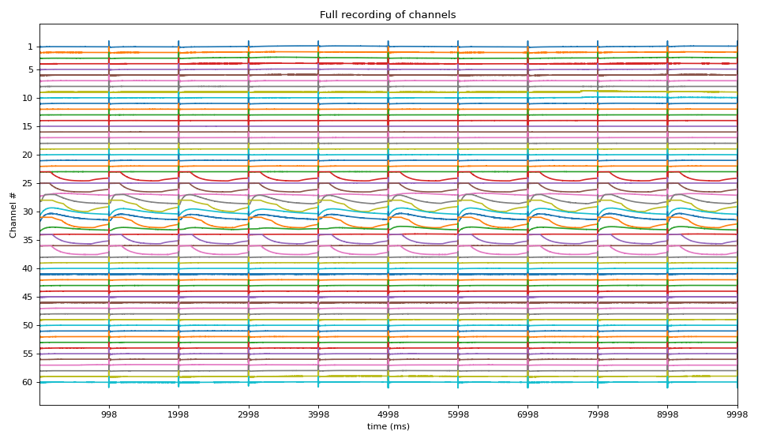

spkit.mea.analyse_mea_file¶
- spkit.mea.analyse_mea_file(file_name, stim_fhz, fs=25000, egm_number=-1, dur_after_spike=None, exclude_first_dur=2, exclude_last_cycle=True, repol_computation=False, bad_ch_stim_thr=2, bad_ch_mnmx=[None, None], p2p_thr=5, range_act_thr=[0, 50], bad_channels=[], good_channels=[], max_volt=1000, verbose=1, **kwargs)¶
A Complete Analysis of a MEA recording
A Complete Analysis of a MEA recording
Given a MEA recoring file in HDF formate (‘.h5’), a complete analysis is provided, step-wise. This function can be used to analyse 100s of files with same paramter settings. Function returns all the feature computed as a DataFrame, with can be exported as csv file
There are many different parameters to set at each step, some of them can be configured via input argumets. The deafult setting of all the parameters at each steps are choosen as to work well for observed cases. For full analysis, try each step seprately to optimise parameters for your own file, once, they are determined, 100s of files can be analysed and same save all the computed metrics in a csv/excel file.
MEA 8x8 GRID | 21 | 31 | 41 | 51 | 61 | 71 | |12 | 22 | 32 | 42 | 52 | 62 | 72 | 82 | |13 | 23 | 33 | 43 | 53 | 63 | 73 | 83 | |14 | 24 | 34 | 44 | 54 | 64 | 74 | 84 | |15 | 25 | 35 | 45 | 55 | 65 | 75 | 85 | |16 | 26 | 36 | 46 | 56 | 66 | 76 | 86 | |17 | 27 | 37 | 47 | 57 | 67 | 77 | 87 | | 28 | 38 | 48 | 58 | 68 | 78 |
- Parameters:
- file_name: str,
file name with full accessible path. File should be in .h5 format. If you have bdf file, use Multichannel Data Manager to cover file type.
check here, how to convert bdf to hdf file: Multichannel Data Manager: https://www.multichannelsystems.com/software/multi-channel-datamanager
- stim_fhz(float, int)
Frequency of Stimulus in Hz (cycles per seconds): eg. 1, 2 etc
for 1Hz, stim_fhz =1
- Setting stim_fhz=None
if stim_fhz=None, it tries to extract it from file name, if exist, else error will be raised for example, if file_name=’MEA_North_1000_1Hz.h5’ function will extract ‘1Hz’ and set stim_fhz=1 This is useful, if analysing mutiple files, with different Frequency of stimulus
- fsint, default=25000 (= 25KHz)
Sampling Frequency of MEA recording
- max_volt: float, int, default=1000
Maximum voltage of signal or stimuli recorded Default datatype of signal recoridng in HDF file is usually ‘int32’, which leades to range from -32768 to 32767 if max_volt=None, then unnormalised signal values are returned. if max_volt is not None, then return signal values will be float32 and from -max_volt to max_volt
Note
If max_volt is changed, make sure to adjust all the other parameters.
- verbose: int, default=1
level of verbosity,
heigher it is more details computations are printed on consol
0 Silent
1 a few details
2 a little more computations
Stim loc
- stim_id_param: dict,
default
stim_id_param = dict(method='max_dvdt',gradient_method='fdiff', ch=0,N=None,plot=0,figsize=(12,3))
- Parameter setting to identify stimuli locations
method: str, default=’max_dvdt’stim location as maximum deflection, which occures when stim shift from -ve to +ve voltage
gradient_method ='fdiff': finite differentiationch=0: fist chennel to id stim locplot=0: if to plot, with figsize=(12,3)
check
get_stim_locfor details
Aligning Cycles
- exclude_first_durfloat, default=2 (ms)
Exclude the duration (in ms) of signal after stimulus spike loc, default 1 ms
It depends on the method of finding stim loc, since stim is 1ms -ve, 1ms +v, and loc is
detected as middle transaction (max_dvdt), atleast 1ms of duration should be excluded.
Default 2ms is excluded, to be safe side
- dur_after_spikefloat, int, default=None
Extract the duration (in ms) after stimulus spike loc to search for EGM
- If set to None (default), dur_after_spike is computed based on stimuli frequency (stim_fhz)
stim_fhz = 1 –> dur_after_spike = 500
stim_fhz = 2 –> dur_after_spike = 300
stim_fhz = 3 –> dur_after_spike = 250
stim_fhz > 3 –> dur_after_spike = 200
- exclude_last_cycle: bool, default=True,
If True, last cycle of stimuli is excluded while aligning cycles. It is recommonded to exclude last egm, as sometimes, last egm might shorter than other, which produces artifact while averaging.
Averaging or Selecting EGM/Cycle
- egm_numberint, (>=-1), default=-1
EGM number (cycle number of stimuli) to be analysed. Number start from 0, to number of cycles of stimuli
egm_number = 0 for analysing 1st EGM of 1st cycle, 1, 2 for 2nd and 3rd and so on,
if
egm_number=-1is passed, all the EGMs are averaged first, before analysing, which is often a good idea to cancel out noise
Activation & Repolarisation Time Localisation
- repol_computation: bool, default=False,
if True, repolarisation time is computed, which leads to computation of APD = RT-AT
if True, parameter setting from ‘at_id_param’ is used
- at_id_param: dict
Parameters to compute activation and repolarisation time loc
Default
at_id_param= dict(at_range=[0,None],rt_range= [0.5, None], method='min_dvdt',gradient_method='fdiff', sg_window= 11,sg_polyorder=3, gauss_window=0,gauss_itr=1, plot=False,plot_dur=2)
- at_range: list of two [t0,t1] default=[0,None], in ms
time limitation in which AT is to be searched, t0 ms to t1 ms limiting it can improve the results
for more detail check:
spkit.get_activation_time- rt_range: list of two [t0,t1] default=[0.5, None], in ms
Only used if repol_computation =True time limitation for repolarisation, AFTER activation time Recommended to use t0 = 0.5, after 0.5 ms of activation time, search for RT
for more detail check:
spkit.get_repolarisation_time- parameters to identify location
method='min_dvdt': For activation and repolarisation minimum deflection, which is maximum -ve deflection is used,gradient_method='fdiff': finite differentiation of signal(
sg_window= 11,sg_polyorder=3,gauss_window=0,gauss_itr=1), used if gradient_method other than ‘fdiff’plot=False, if True, plot AT & RTplot_dur=2, used plot is True
for more detail check:
activation_time_loc,activation_repol_time_loc
Exctracting EGM
- egm_id_param: dict,
Parameters used while exctracting EGM from each channel.
Default setting
egm_id_param = dict(dur_from_loc=5,remove_drift=True, apply_after=True,sg_window=201, sg_polyorder=1,pad=np.nan, verbose=0,plot=False)
for more detail check: func:
extract_egmGiven activation location for EGM, two type of parameters are required (1) duration of EGM to be extracted, and (2) preprocessing EGM
- dur_from_loc: float, default=5 ms
From given loc, dur_from_loc ms from both side of signal is extract, as EGM if dur_from_loc=5, then 10ms of eletrogram is extracted
- remove_drift: bool, default=True,
If True, Savitzky-Golay filter is applied to remove the drift
- apply_after: bool, default=True,
If True, Savitzky-Golay filter to remove drift is applied after extracting EGM Else drift is removed from entire signal and EGM is extracted
- Parameters for Savitzky-Golay filter
: sg_window=91,sg_polyorder=1 : keep the window size large enough and polyorder low enough to remove only drift
Note
- Parameters of Savitzky-Golay filter should be choosen appropriately, which depends if
it is applied before or after extracting EGM. In case of after EGM extraction, signal is a small length, so need to adjust sg_window accordingly
- pad: default=np.nan
To pad values to EGM, in case is to shorter than others. Padding is done to make all EGMs of same shape-nd-array
- plot: bool, default False
If True, two figures per channel are plotted Figure 1 shows, a raw EGM, computed drift and corrected EGM Figure 2 shows, Only corrected EGM with loc
- verbose: bool, default=False
If True, intermediate computations are printed,
Feature Exctracting from EGM
- egm_feat_param: dict,
Parameters to extract Features from EGM
Default setting .. code-block:
egm_feat_param = dict(width_rel_height=0.75, findex_rel_dur=0.5, findex_rel_height=0.75, findex_npeak=False, plot=0,verbose=0)
for more detail check: func:
egm_features- There are 7 features extracted from each EGM
Peak to Peak voltage
Duration of EGM
Fractional Index
Refined Duration of EGM based on fractionating peaks
Energy of EGM
Voltage Dispersion
Noise variance
For detailed overview of all the feature check:
egm_features
- width_rel_height: scalar, default=0.75
Relative hight of peaks to estimate the width of peaks,
Lower it is smaller the width of peak be, which leads to smaller duration of EGM
- findex_rel_dur: +ve scalar, default = 1
Relative duration of search region, to find fractionating peaks.
As explained above for duration,
- findex_rel_height: scalar, default=0.75
Relative height threshold for defining the fractionation,
Any positive peak which exceeds the hight of 0.75*positive peak of EGM at loc, within Search region is considered fractionating peak
Similarly, any negative peak which goes below 0.75*negative peak of EGM at loc, within Search region is considered fractionating peak
- findex_npeak: bool, deafult=False
if true, negative peaks are considered for fractionation, default=False
- plot: if True,
plot EGM with all the features shown
figsize=(8,3): size of figure
- verbose: 0 Silent
1 a few details 2 all the computations
Interpolation of Feature Matrix - AT
- intp_param: dict,
default setting
intp_param = dict(pkind='linear',filter_size=3,method='conv')
- Parameters used for interpolating Activation Map
pkind='linear': kind of interpolationfilter_size=3: filter_size to smooth the map,method='conv': method of convolution
Note
Increase ‘filter_size’ for more smoother MAP
for more details check
spkit.fill_nans_2d
Conduction Velocity computation
- cv_param: dict,
Parameter setting to compute Conduction Velocity
Default setting
cv_param = dict(eD=700,esp=1e-10,cv_pad=np.nan, cv_thr=100,arr_agg='mean', plots=2,verbose=True)
- eD: scaler, (default=700 mm)
Inter-Node Distance
distance between two nodes in horizontal and vertical axis on MEA electrode-plate distance is given in mm
- esp: scalar, default =1e-10
epsilon
to avoid diving by zero, esp is used
- cv_thr: scalar, default=100 cm/s
threshold on conduction velocity to exclude
any electrodes shows cv>=cv_thr is replaced by ‘cv_pad’ (np.nan)
- cv_pad: scalar default=np.nan
replacement value
any cv value above cv_thr is replaced by cv_pad, to avoid including in computation
- arr_agg: str, {‘mean’,’median’} default=’mean’
method to aggregate the directional arrows, mean or median
- plots: int, default=1
if 1, plot two figures for CV maps, two figures for directional compass
if 2, also plot activation matrix and conduction velocity matrix with more details
- verbose: boot, default=True
verbosity
print information
For more details check
compute_cv
Identifying Bad Channels & Bad EGMs
- 1. Based on Stimulus duration
If stimulus last longer than threshold duration, given by ‘bad_ch_stim_thr’ in ms
- bad_ch_thr: float, default = 2 (ms)
Duration, if average duration of stimuli per cycle exceed the threshold on either side +ve/-ve, it is flagged as bad channel
Note
Lower the threshold, more channels will be flagged, higher the threshold less channels will be flagged
- bad_ch_mnmx: list of two [None, None]
minimum and maximum valtage of stimulus, e.g. -1000, 1000.
Default is None, in which case, it is computed from min and max of signal itself.
Increase this threhold to avoid flagging channels as bad.
for more details, check
find_bad_channels_idx- 2. Based on EGM voltage
If EGM is very small, it is usually a noise
- p2p_thrfloat, default=5,
Threhold on peak-to-peak voltage of EGM, if EGM has less the threshold peak-to-peak, it is flagged as bad
Descrese this threhold to avoid flagging channels as bad.
Note
Lower the threshold, less channels will be flagged, higher the threshold more channels will be flagged
3. Based on Activation Time
If activation time is out of given range
- range_act_thr: list of two, deafult = [0, 50],
Minimum and maximum activation time range. If activation time of EGM is out of given limits, then it is flagged as bad.
By dfault, if activation time is greater than zero, it is considered okay.
Example, range_act_thr = [5,30] means, if activation time is less than 5 ms or grater than 30 ms, is it flagged as bad
range_act_thr = [0,30] works well too
Manually passing list of channels as BAD and GOOD
Passing list of good and bad channels overrides the criteria mentioned above, and enforces the list of Good and Bad
- bad_channels: list, deafault = []
Passing list of bad channels ensures that channel is in list of bad channels, regardless of criteria
For example, channel 15 is alwasy a bad so bad_channels=[15]
List should have same name of channels as in channel labels
- good_channels: list, deafault = []
Passing list of good channels overrides the criteria mentioned above, and exclude them from list of bad channels
List should have same name of channels as in channel labels
Settings for All the plots
- map_prop: dict,
Customising ranges for heatmap, colormap, style, type of objects to plot
Default setting
map_prop = dict(at_range=[0,20],p2p_range=[0,100], dur_range=[0,10],f_range=[1,5], cv_range=[0,None],rt_range=[0,100], apd_range=[0,50],at_cmap='jet', interpolation='bilinear',countour_n=25, countour_clr='k', cv_arr_prop = dict(color='w',scale=None))
Ranges of plot colormaps Final Activation Map with countours
Conducntion Velocity Arrows
cv_arr_prop=dict(color=’w’,scale=None)
for more details check
spkit.direction_flow_map
- Returns:
- Features_dfpd.dataframe,
Statistics of all the features (mean, median, sd across all the channels)
- Features_chFeatures of all the channels
- Features_matFeature Matrices of Activation Time, Conduction Velocity, Bad Channel etc
- Data: dict of signal, channel labes and fs
i.e. {‘X’:X, ‘ch_labels’:ch_labels, ‘fs’:fs}
See also
Notes
Check [Examples](https://spkit.github.io/auto_examples/) tab
A code that shows full parameter settings
#parameters stim_id_param = dict(method='max_dvdt',gradient_method='fdiff', ch=0,N=None,plot=0,figsize=(12,3)) at_id_param = dict(at_range=[0,None],rt_range= [0.5, None],method='min_dvdt', gradient_method='fdiff',sg_window= 11,sg_polyorder=3, gauss_window=0,gauss_itr=1,plot=False,plot_dur=2) egm_id_param = dict(dur_from_loc=5,remove_drift=True,apply_after=True, sg_window=201,sg_polyorder=1,pad=np.nan, verbose=0,plot=False) egm_feat_param = dict(width_rel_height=0.75,findex_rel_dur=0.5, findex_rel_height=0.75,findex_npeak=False, plot=0,verbose=0) intp_param = dict(pkind='linear',filter_size=3,method='conv') cv_param = dict(eD=700,esp=1e-10,cv_pad=np.nan,cv_thr=100,arr_agg='mean',plots=2, verbose=True) map_prop = dict(at_range=[0,20],p2p_range=[0,100],dur_range=[0,10],f_range=[1,5], cv_range=[0,None],rt_range=[0,100],apd_range=[0,50], at_cmap='jet',interpolation='bilinear',countour_n=25, countour_clr='k',cv_arr_prop = dict(color='w',scale=None)) #final-call Fdf,Fch,Fmat,Data = sp.mea.analyse_mea_file(file_name, stim_fhz, fs=25000, egm_number=-1, dur_after_spike=None, exclude_first_dur=2, exclude_last_cycle=True, repol_computation=False, bad_ch_stim_thr=2, bad_ch_mnmx=[None, None], p2p_thr=5, range_act_thr=[0, 50], bad_channels=[], good_channels=[], max_volt=1000, verbose=1, stim_id_param=stim_id_param,at_id_param=at_id_param, egm_id_param=egm_id_param, egm_feat_param=egm_feat_param,intp_param=intp_param, cv_param=cv_param,map_prop=map_prop)
Examples
>>> #sp.mea.analyse_mea_file >>> import numpy as np >>> import matplotlib.pyplot as plt >>> import os, requests >>> import spkit as sp >>> print('spkit-version: ',sp.__version__) >>> # Download Sample file if not done already >>> file_name= 'MEA_Sample_North_1000mV_1Hz.h5' >>> if not(os.path.exists(file_name)): >>> path = 'https://spkit.github.io/data_samples/files/MEA_Sample_North_1000mV_1Hz.h5' >>> req = requests.get(path) >>> with open(file_name, 'wb') as f: >>> f.write(req.content) >>> Features_df,Features_ch,Features_mat, Data = sp.mea.analyse_mea_file(file_name,stim_fhz=1)
